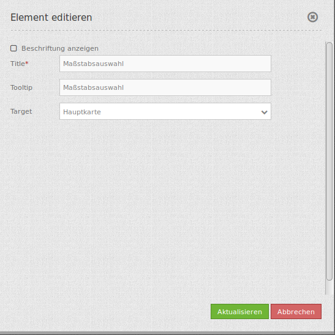

Scale Selector (Maßstabsauswahl)¶
Dieses Element zeigt eine Auswahlbox mit Maßstäben an. Der Kartenmaßstab ändert sich, wenn ein neuer Wert der Auswahlbox ausgewählt wurde. Beachten Sie: Die Auswahlbox zeigt nur Maßstäbe an, die vorher für das Map Element angegeben wurden.

Konfiguration¶
{kind=link}
- Beschriftung anzeigen: true, um die Maßstabsauswahl zu beschriften. Der Standardwert ist false.
- Title: Titel des Elements. Dieser wird in der Layouts Liste angezeigt und ermöglicht, mehrere Button-Elemente voneinander zu unterscheiden. Der Titel wird außerdem neben dem Button angezeigt, wenn “Beschriftung anzeigen” aktiviert ist.
- Tooltip: Text, der angezeigt wird, wenn der Mauszeiger eine längere Zeit über dem Element verweilt.
- Target: ID des Kartenelements, auf das sich das Element bezieht.
YAML-Definition:¶
tooltip: "Scale" # Text des Tooltips
target: ~ # ID des Kartenelements
label: false # false/true, um die Maßstabsauswahl zu beschriften. Der Standardwert ist false.
CSS-Styling¶
Der Style des Elements (z.B. die Breite) kann mit folgendem CSS-Statement überschrieben werden:
.mb-element-scaleselector.dropdown {
width: 200px;
}
Class, Widget & Style¶
- Class: Mapbender\CoreBundle\Element\ScaleSelector
- Widget: mapbender.element.scaleselector.js
- Style: mapbender.elements.css
HTTP Callbacks¶
Keine.
JavaScript API¶
Keine.
JavaScript Signals¶
Keine.